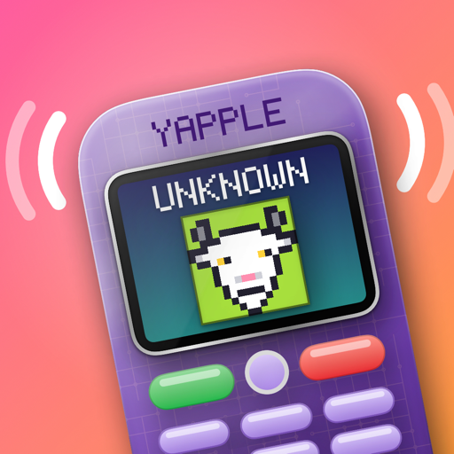

WRONG NUMBER
A flip phone that strangers call by mistake.
Yapple turns your iPhone into a chunky, shiny, early-2000s flip phone, and then strangers start calling it. Once or twice a day, it rings. You don't know who it is. They don't know you either.
Pick up and someone's already talking: a babbling little voice you can't quite make out, and subtitles that mostly can. You never say a word. They keep going anyway.
And somewhere in all those wrong numbers is a mystery only you can solve.
WHY IT'S FUN
ANYONE COULD BE ON THE LINE
A grandpa who remembers when phones were a rock. A horse clinic chasing your horse's warranty. A pirate who wants to know where you buried it. A goat. The first time anyone calls, the screen just says UNKNOWN.
THERE'S A MYSTERY TO SOLVE
Some of the callers keep ringing back, and they're all looking for the same man. This used to be his number. Listen closely: the clues are in the calls. Work out who to ring, dial them, and find out what happened to him.
DIAL A WORD
The keypad works. Spell a word on the letters, press green, and over 500 numbers pick up:
The sun only answers at night. The Devil puts you on hold. 911 is open weekdays, nine to five.
IT'S YOURS
Pick a colour on day one. You can never change it. Then it wears in, call by call: scuffs, grubby keys, a hinge that creaks, and near the end a cracked screen and a line of dead pixels.
MADE FOR IPHONE DUO, AND EVERY IPHONE
IPHONE DUO
Folded, it is the closed phone: the little outside screen shows who's calling, and the whole thing buzzes. Open it to answer. The caller starts talking the moment the hinge cracks open. Snap it shut to hang up.
Open, the wide inner screen puts the caller's face beside their name.
CLASSIC IPHONE
On a flat-screen iPhone, it's the phone flipped open in your hand: the same chunky keypad, the same glowing little screen. The green key answers, the red key hangs up, just like the real thing.
Calls ring as notifications, so it rings even when the app is closed.
WHO'S CALLING
And a dog, a cat, a crying baby, a landlord, an inspector and more: over twenty strangers, each with their own ringtone, voice and pixel portrait.
SIX COLOURS. PICK ONE.
Cream, translucent purple (circuit board and all), lime green, hot pink, baby blue or grey. Its serial number is the day you got it.
Free to start, with one small banner ad. One purchase unlocks the whole story and removes the ad for good.
Yapple: Wrong Number · For iPhone Duo and every iPhone · © 2026 Roozbeh Moayyedian